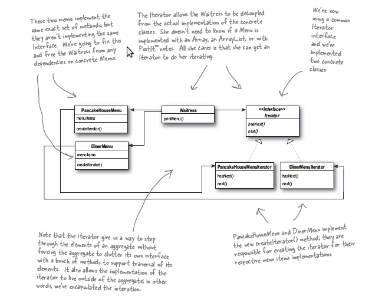
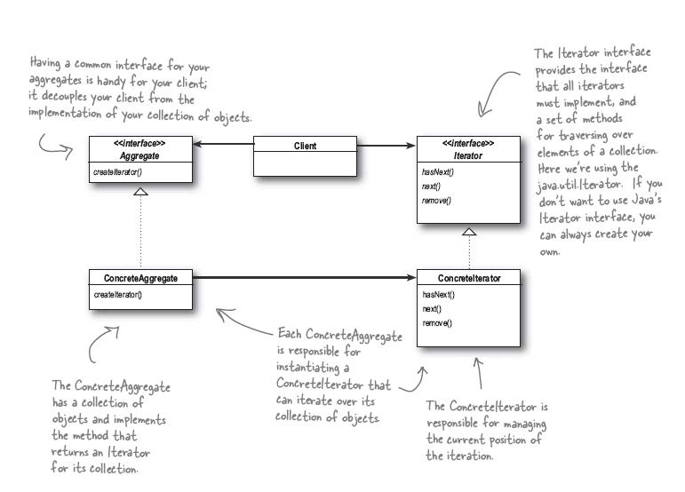

The Iterator Pattern provides a way to access the elements of an aggregate object sequentially without exposing its underlying representation.
迭代器模式 提供了一种对一种聚合体无需暴露其内部表示而又能顺序存取其元素的方法.
有两种不同的菜单,菜单的条目是相同的类型,但是每个菜单的条目所用的表示方式不同,一个为数组,一个为vector, 这时为了更好地提供统一的接口,我们可以使用 Iterator模式 来完成.
类图如下:
迭代器模式 类图如下:
下载请点击 这里
1 2 3 4 5 6 7 8 9 10 11 12 13 14 15 16 17 18 19 20 21 22 23 24 25 26 27 28 29 30 31 32 33 34 35 36 37 38 39 40 41 42 43 44 45 46 47 48 49 50 51 52 53 54 55 56 57 58 59 60 61 62 63 64 65 66 67 68 69 70 71 72 73 74 75 76 77 78 79 80 81 82 83 84 85 86 87 88 89 90 91 92 93 94 95 96 97 98 99 100 101 102 103 104 105 106 107 108 109 110 111 112 113 114 115 116 117 118 119 120 121 122 123 124 125 126 127 128 129 130 131 132 133 134 135 136 137 138 139 140 141 142 143 144 145 146 147 148 149 150 151 152 153 154 155 156 157 158 159 160 161 162 163 164 165 166 167 168 | #include<iostream>
#include<vector>
#include<string>
using namespace std;
class Iterator;
class DinnaMenuIterator;
class PancakeMenuIterator;
class MenuItem
{
public:
string name;
double price;
MenuItem(string name, double price)
{
this->name = name;
this->price = price;
}
string getName(){return name;}
double getPrice(){return price;}
};
// PancakeMenu and DinnerMenu use the different internal representation of collection
// so we can implement a unify Iterator class to offer the same interfaces
class PancakeMenu
{
public:
vector<MenuItem*> items;
PancakeMenu()
{
items.push_back(new MenuItem("Potato", 13.5));
items.push_back(new MenuItem("tomato", 33.5));
items.push_back(new MenuItem("pancake", 3.5));
}
};
class DinnerMenu
{
public:
MenuItem* menuitem[6];
DinnerMenu()
{
for(int i=0; i<6; i++)
menuitem[i] = NULL;
menuitem[0] = new MenuItem("Noodle", 45.5);
menuitem[1] = new MenuItem("Rice", 32.4);
}
};
class Iterator
{
public:
int position;
Iterator():position(0){}
virtual bool hasNext(){}
virtual MenuItem* next(){}
};
class PancakeMenuIterator:public Iterator
{
public:
PancakeMenu *pm;
PancakeMenuIterator(PancakeMenu *pm)
{
position = 0;
this->pm = pm;
}
bool hasNext()
{
if (position<pm->items.size() && position>=0)
return true;
else
return false;
}
MenuItem* next()
{
return pm->items[position++];
}
};
class DinnaMenuIterator:public Iterator
{
public:
DinnerMenu *dm;
DinnaMenuIterator(DinnerMenu *dm)
{
position = 0;
this->dm = dm;
}
bool hasNext()
{
if (position<6 && dm->menuitem[position] != NULL)
return true;
else
return false;
}
MenuItem* next()
{
return dm->menuitem[position++];
}
};
class Waitress
{
public:
PancakeMenuIterator *pmi;
DinnaMenuIterator *dmi;
Waitress(PancakeMenuIterator *pmi, DinnaMenuIterator *dmi)
{
this->pmi = pmi;
this->dmi = dmi;
}
void printAllMenu()
{
printMenu(pmi);
printMenu(dmi);
}
private:
void printMenu(Iterator *iter)
{
while(iter->hasNext())
{
MenuItem *mi = iter->next();
cout<<"Name: "<<mi->getName()<<" Price:"<<mi->getPrice()<<endl;
}
}
};
int main()
{
PancakeMenu pm;
cout<<pm.items[0]->getName()<<endl;
DinnerMenu dm;
cout<<dm.menuitem[0]->getName()<<endl;
PancakeMenuIterator pmi(&pm);
DinnaMenuIterator dmi(&dm);
// the following comments show the same interfaces of different Iterator
/*
cout<<"###### Pancake using Iterator pattern #########"<<endl;
while(pmi.hasNext())
{
MenuItem *mi = pmi.next();
cout<<"Name:"<<mi->getName()<<" Price:"<<mi->getPrice()<<endl;
}
cout<<"###### Dinner using Iterator pattern #########"<<endl;
while(dmi.hasNext())
{
MenuItem *mi = dmi.next();
cout<<"Name:"<<mi->getName()<<" Price:"<<mi->getPrice()<<endl;
}
*/
cout<<"####### Waitress start ###############"<<endl;
Waitress waitress(&pmi, &dmi);
waitress.printAllMenu();
return 0;
}
|
输出结果为:
Potato
Noodle
####### Waitress start ###############
Name: Potato Price:13.5
Name: tomato Price:33.5
Name: pancake Price:3.5
Name: Noodle Price:45.5
Name: Rice Price:32.4